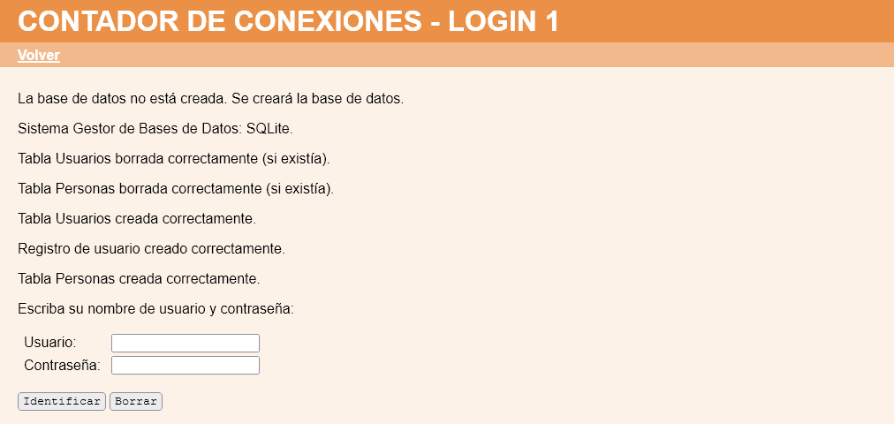

Contador de número de conexiones - Comentarios
- La aplicación debe funcionar tanto con SQLite como con MariaDB/MySQL. El usuario de MariaDB/MySQL deberá tener su nombre de pila, en minúsculas y sin acentos y ser un usuario con una base de datos de su mismo nombre. Haga una captura de pantalla de la creación del usuario y otra de la vista cuando entra en phpMyAdmin con ese usuario.
- Al iniciar la aplicación por primera vez, el usuario root tendrá como número de conexiones el valor 0. La variable de configuración que contiene el valor a partir del cual se avisará a los usuarios se puede llamar $cfg["numeroConexionesAviso"], cuyo valor puede ser 3:

- Al borrar todo y elegir el administrador incluir los registros de prueba, el número de conexiones de todos los usuarios será cero:

- Al conectarse y desconectarse los usuarios, se actualizarán los contadores de cada usuario:
- El listado de usuario se podrá ordenar por el campo Número de conexiones:
- Si el número de conexiones ha superado el valor predefinido, se mostrará un aviso al realizarse la conexión:
- El aviso se mostrará sea siempre una vez superado el número de conexiones predefinidas:
- Al cambiar la contraseña, el contador se volverá a poner a cero.
- Haga con phpMyAdmin una copia de seguridad de la base de datos, como usuario con su nombre.